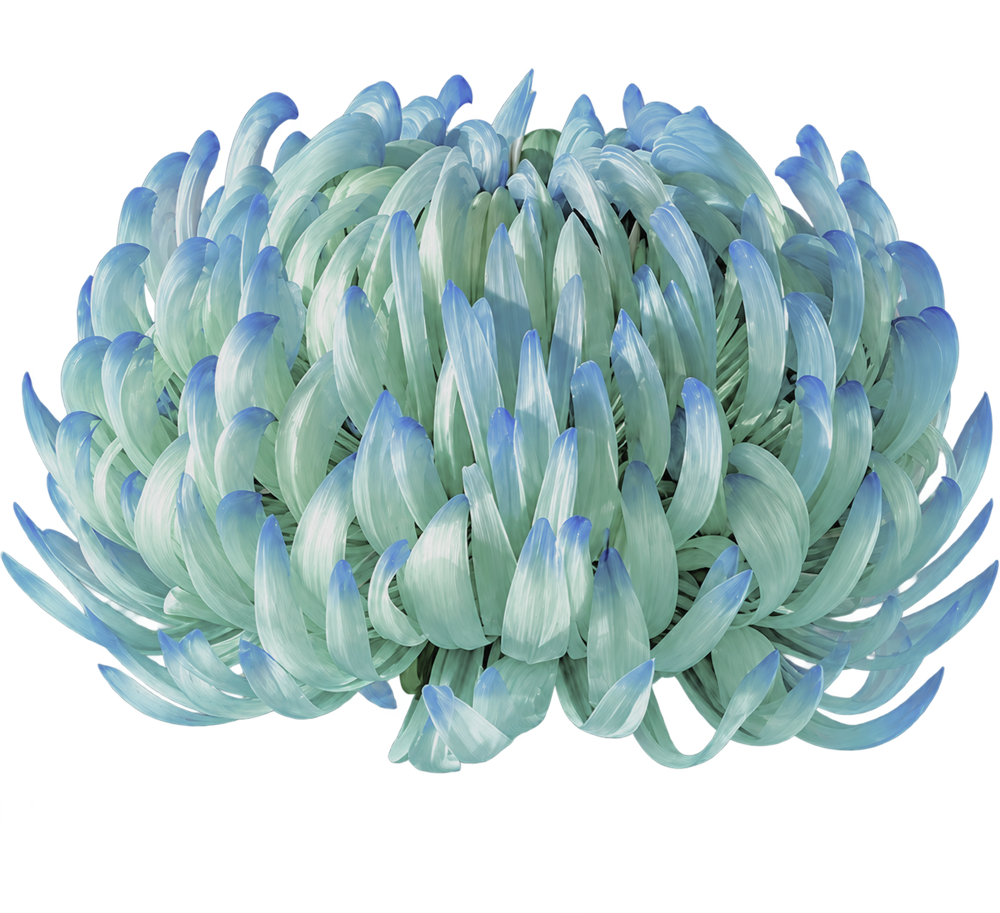
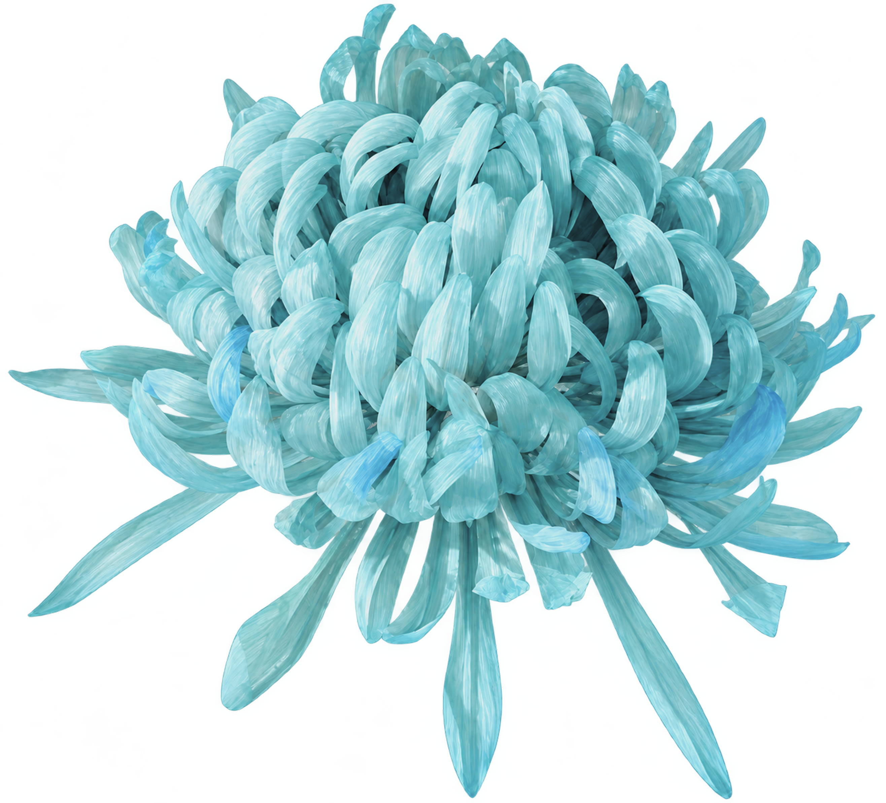

The Gift or the Cage
Wholeness
and
Perfection
An interactive experiment exploring
perfectionism, control and unconscious repetitive behaviour.
You cannot create a kingdom where everything is perfect.
A hollow perfection will leave you with nothing.
A SMALL GESTURE. A SLOW UNFOLDING.
Rotate the wheel
to help the flower grow.